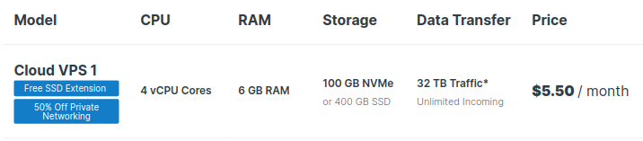
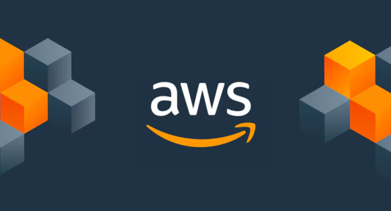
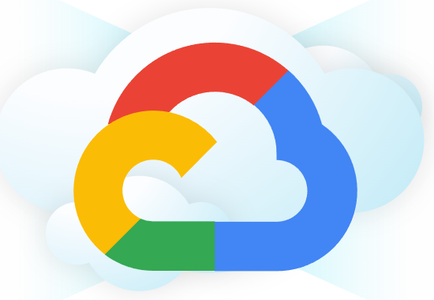
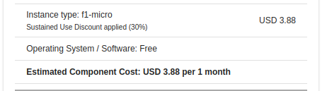
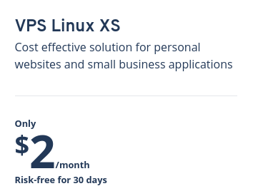

A VPS is a great way to improve your coding skills. You can learn Linux, host a server, place your coding projects to the public and commit yourself to a project without worrying about a computer restart.
There are a lot of choices out there and I want to give you my experience in using each of these hosts over the past years. I am talking here from my own usage of these services, so you can rest assured they are represented well.
Here are the 4 VPS I recommend.
Contabo
Contabo is my favorite VPS host. Yes, AWS is super cool due to all its features. But Contabo is super cheap, fully featured with great customer support.
They are masters of loss leadership. No other VPS does this like Contabo. They take big hits in their VPS hosting so they can sell other products. They operate VPS hosting at a loss.
This is what makes them so good, it is their business model. The only problem is, they are not good at scaling. In fact I would say their #1 issue is the inability to scale.
Contabo VPS is more meant for the solo developer just putting services up on the internet. Things like websites, game servers or obscure apps.
Pricing 10/10
This is the cheapest VPS host you will find for its features. DDOS, Static IP, open mail server ports (unheard of!) and all the rest at a super cheap price.
Features 10/10
Comes with DDOS, Static IP, All ports availabile, unlimited inbound, high high outbound, great dashboard. This is the most fully featured VPS host for its price.
Global availability 6/10
This used to be more 3/10. As they have grown they opened locations in the USA. In the past they were European only and are now spreading. Though they charge extra for setting up in America.
Not as globally available as other VPS.
Software/service Integration 4/10
You have to do mostly everything yourself. They don't have a lot of automation when it comes to installing things like WordPress and game servers.
You are meant to set this all up in Linux.
Customer support 9/10
Customer support is always responsive within 24 hours. It is hard to get someone on the phone, but their email service is constantly monitored 6AM - 8PM German time.
The only reason I give a 9/10 is their lack of phone support. Besides that customer service is phenomenal. Though, I see a lot of complaints online that they are bad at giving the customer exactly what they want over email.
Contabo staff is human, they make mistakes. If you know exactly what you want and explain it well, their customer service is perfect. The issue with these complaints is if your emails are not well written Contabo staff may not understand what you want.
I don't know why that is so. Could be a language barrier, or something else. I often had to clarify what I meant with them. Over the years using this VPS I got better at my explanations. Once my email quality improved their service is perfect.
Scalability 3/10
No scalability, don't even try Kubernetes with these guys. This is meant for the solo developer wanting a small, fully featured server.
AWS
Amazon also uses loss leadership like Contabo, but instead of VPS being the loss, it is the entire Amazon Shopping platform. Amazon Shopping is built as a showcase on top of AWS.
They do not make a lot of profit from the shopping platform. Yes, shopping is majority revenue, but the large majority of pure profit comes from AWS.
AWS is the cash cow of Amazon. Their cloud service is complex and built for developers at large scale. They are extremely scalable, with the most automation, integration and security.
AWS is a boss. But they can be a really expensive boss. They are so fully featured with 100s of services and software integrations. But are the most price scaling service here.
It is overkill for a solo developer to use AWS unless he needs the scale. This is more for enterprises and huge businesses. You will be surprised how fully featured this platform is.
Pricing 7/10
I was checking out the pricing for the first time in a few years. Wow oh wow, they have gotten cheaper, much cheaper. This is a good sign for us solo developers.
If you reserve a tiny VPS for 3 years all upfront the cost is $0.80/month. In addition you need to buy the storage, which at 10GB is also $0.80/month.
For VPS specifically I am very skeptical of AWS. They try to give an amazing and addictive developer experience. Many developers, myself included, have tried AWS services where it is stated to be super cheap.
But we get unknown fees on our debit card for some service they didn't mention in their blog. For this specific history behind AWS I give it a 7/10.

Features 10/10
You won't find another VPS host like the EC2 hosting here on Amazon. VPS on AWS is called EC2 by the way. But, there is nothing you can't do on AWS. If you know what you are doing you can save a ton of money and keep all the features.
Global availability 10/10
This is perhaps the most global service out there. They have their own global private network with dedicated wiring. Their data centers are spread everywhere across the world.
You won't find a more global platform.
Software/service Integration 10/10
Each of these 100s of AWS services integrates with EC2. EC2 is the backbone of the entire cloud service. Most serverless services on the platform use EC2 in the background.
For this reason EC2 is highly integrated on the platform.
Customer support 5/10
At the end of the day AWS is a business. They won't cater to unknown charges and overpricing. If you have the money they will give you all the attention in the world. But for a small developer the customer service is lacking.
Scalability 10/10
Kubernetes, load balancers, docker images, gateways and scaling API endpoints. There are so many scalability features included with AWS. If you need the scalability this is the place to be.
Google Cloud
Google Cloud is not as cheap or featured as AWS. Just for 0.678 GB of RAM and cheapest CPU I get $3.88 on their pricing calculator. Not exactly the best sale price I ever heard.
They have changed the UI several times over the past decade. The main reason I would use this platform is for their free trial credits. They give $300 free credit to any new email for 90 days. In the past this was 6 months.
A few months ago Google Cloud placed A100s under this free credit. Developers swarmed it with AI training and new emails. Since then they removed the feature.
For developers I would say the only reason to use this platform is for work and free credits. Loads of scrupulous developers create new emails just to get free compute here.
Pricing 6/10
Not the cheapest nor fully featured. In addition because this is a cloud platform it is possible to get charged unknown fees. Many developers and even universities use this for all the discount deals and trials Google provides. In the past I have seen university discounts for professors to teach a class.
Features 9/10
This cloud platform has everything you need, just like AWS. Google Cloud is less complex, less popular and has fewer services. But it does scale. In addition their UI has gotten a complete overhaul a a few times the past decade. You will see a lot of out of date tutorials and blogs out there, due to the constant changing.
Global availability 9/10
Available globally just like AWS with its own private networking. Not as extensive.
Software/service Integration 9/10
The VPS service is known as Compute Engine. Just like AWS it integrates with all other features of the platform.
Customer support 8/10
Google Cloud has always had better customer support than AWS. I used Google Cloud for a few months at a time in the past. They have always been responsive, with an open customer service phone number, active email and chat.
Scalability 9/10
There is kubernetes, load balancers, gateways, the whole thing. If you need scalability Google Cloud is a great choice. Though me personally I love AWS more.
IONOS
There is only 1 reason to use IONOS over Contabo or AWS. A solid non-contract Price. You can get perhaps the cheapest, no hidden fees VPS in the world for only $2/month. Yes, it is tiny and has way fewer features than Contabo, AWS and Google Cloud.
But, $2!? C'mon that is cool. The cheapest VPS on Contabo is $5.50 right now. And, you can't really trust Cloud providers to not charge you something extra. If you want the cheapest, here it is. But if you want the most value for non-contract compute stick to Contabo.
What do I mean by non-contract? I mean you can cancel any month and not worry about reserved pricing. And I also mean no hidden fees. For this particular use case, for a solo developer IONOS is a great choice.
The only con is, it doesn't have DDOS protection, limits SMTP server usage (unlike Contabo) and does not provide a static IP. If you don't need any of that, IONOS is a great choice.
They even have domain integration, so the IP thing would not be a problem. Just place your domain on the IONOS platform.
Pricing 10/10
You won't find a cheaper, non-contract, no hidden fees service. But it does not have a lot of features. You are just getting Linux.
Features 2/10
We are getting near to none here. This is purely a Linux server. There is a UI but it is the typical VPS stuff, nothing special.
Global availability 4/10
I used IONOS for a while. Global availability was not their primary focus. They do have data centers in many countries but it is not a selling point.
Software/service Integration 2/10
Everything is Linux, you have to know Linux to setup all software.
Customer support 7/10
They are available over chat and email and always respond quickly.
Scalability 3/10
IONOS has kubernetes integration. Though I wouldn't trust their pricing. If you are going to scale, you might as well go for AWS.
Anywho, I hope you learned something...
Check out my book on learning code!
Happy coding!
Resources
How do VPS servers work: How Do Virtual Private Servers Work and Why Are They Awesome?
What is a Cloud System: How do cloud services work & what is a virtual machine?